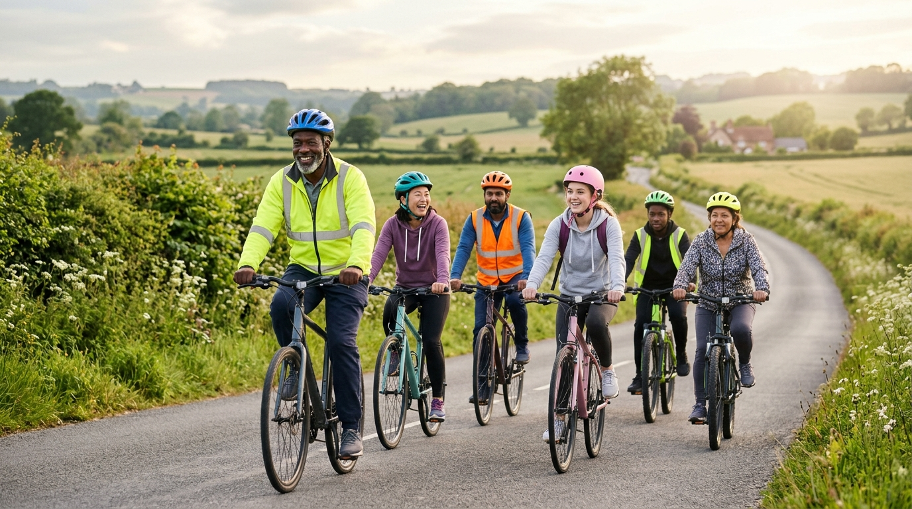

Join Local Led Rides, Volunteer, and Connect With Us
Active travel is most powerful when experienced together! Pedal Cymru supports a growing network of volunteer-led social cycling groups across Wales, welcoming riders of all ability levels—from total beginners returning to the saddle to seasoned commuters.
Community Led Rides and Events
Our free, guided social rides take place weekly across South, Mid, and North Wales. Led by qualified ride leaders, these groups follow quiet traffic-free routes and scenic paths, helping you build road confidence in a supportive, friendly environment.
Volunteer as a Cycle Champion
Do you love cycling and want to help others in your local area? Become a Pedal Cymru Cycle Champion! We provide free training in route planning, basic bike maintenance, and ride leadership for enthusiastic volunteers.
